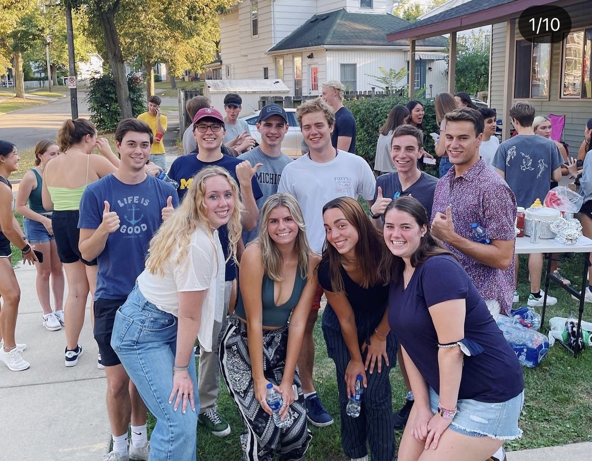
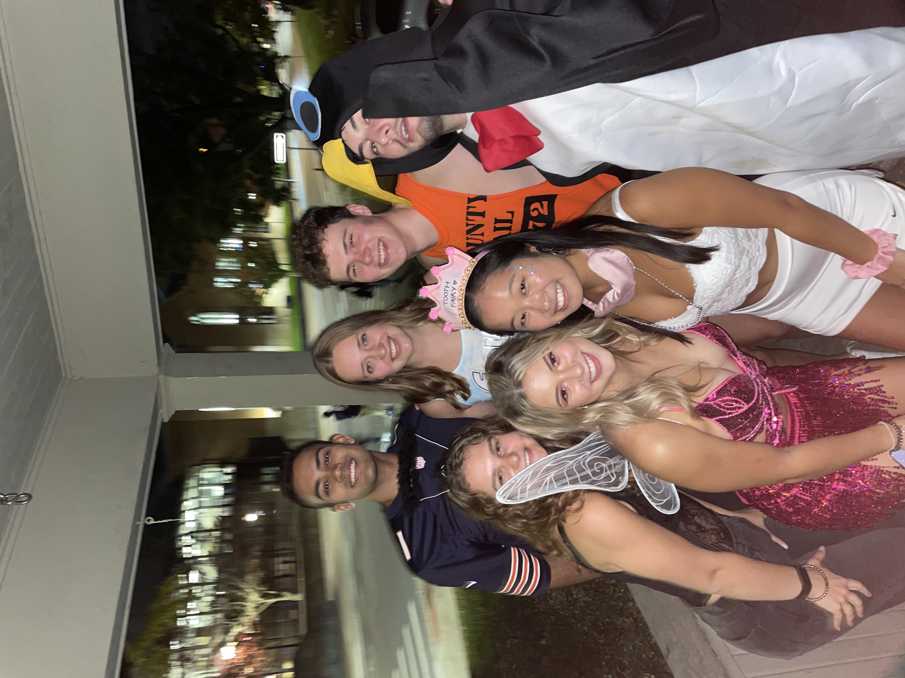
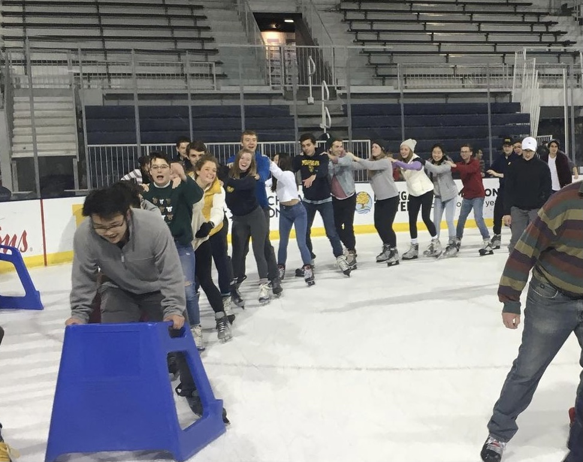

Events
Below you will find some of the social events we have held for our members the past couple seasons. We work hard at our sport together, but we love to have fun together, too!
To kick-off the season, we held a barbeque social in early September for new members to meet each other and do what swimmers love most: eat! Our Administrative Chair, Will, was on grill duty and cooked up hamburgers, hot dogs, and vegan burgers for everyone to eat. We also had yard games set up, uding Spikeball and corn hole. This event was a great way to break the ice and start off being in-person with the team again!
In honor of Halloween, our Social Chair, Jonas, hosted a costume party at his house. There, members shared cider and donuts as we admired the outfits our teammates had crafted! Some notable costumes of the night included a Commuter North bus, Zach & Cody, Coraline, and a penguin. This annual Halloween party is a club swim tradition and will undoubtedly continue in the seasons to come.
My favorite social event from two seasons ago was ice skating at Yost. We were able to fund about 30 of us to participate in an open skate together for a couple hours on a weeknight. This was another fun out-of-the-pool activity that promoted bonding during an event that most students aren’t able to do in college.
